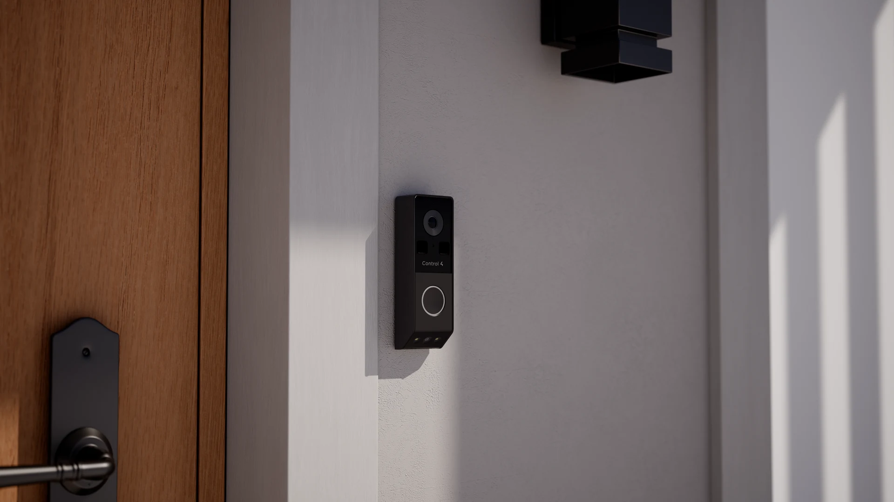
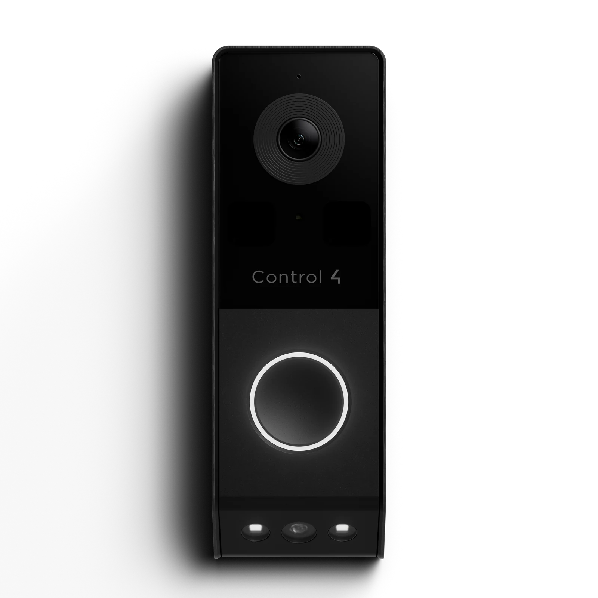
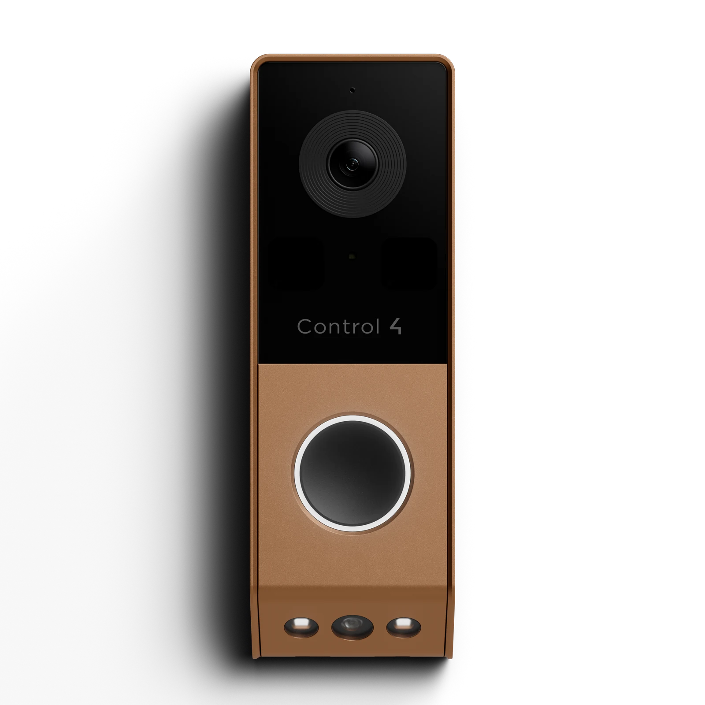
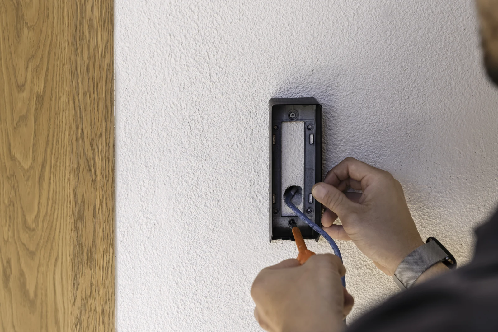
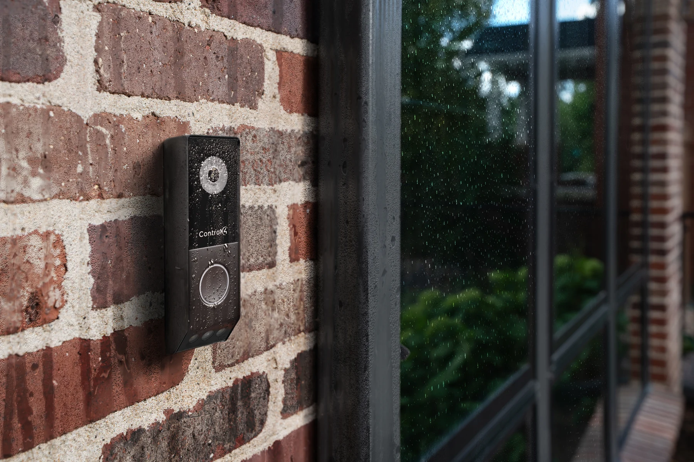
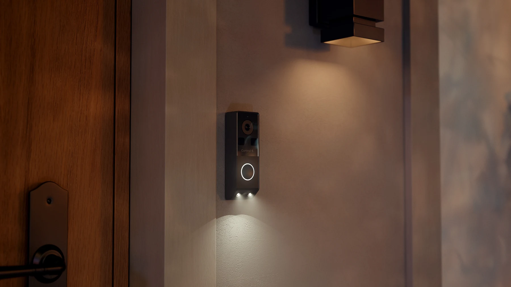

Meet Chime Pro.
Visitors above.
Deliveries below.
A second camera looks down toward the doorstep. The important question is whether that extra view—and the installation behind it—makes your front door easier to manage.

The short answer: Chime Pro is a dual-lens, wired PoE doorbell for a compatible Control4 home. It is worth considering when seeing packages below the button matters and Ethernet can reach the entrance. It is not a Wi-Fi replacement that simply uses your old two-wire doorbell cable.
In this guide
One view for the visitor. Another for the doorstep.
A familiar doorbell problem is seeing a face clearly but not the delivery left beneath it. Chime Pro uses separate main and downward-facing package cameras. The manufacturer describes a picture-in-picture view so both perspectives can be seen together.
That is a useful reason to consider it—not a promise that every corner of your porch will be visible. Steps, recessed entries, large parcels and the mounting position can still obstruct the view. Before the position is finalized, check where a visitor stands and where deliveries usually land.
The current product listing and its linked data sheet describe the dual-camera design. This is a documentation-based buying guide, not an independent image-quality or reliability test.
Black or Antique Bronze
Look at the faceplate beside your actual handle, house numbers and exterior lighting. The finish should belong at the entrance rather than become the first thing you notice.

A simple match for dark handles and contemporary exterior hardware.

A warmer option to consider with bronze hardware and wood doors.
Official Control4 / ADI studio images, proportionally resized with transparency retained. Screen color and lighting are not a substitute for checking the finish in person.
The cable and the Control4 system come first
Chime Pro uses 802.3af Power over Ethernet: a suitable Ethernet cable carries network data and power from a PoE switch or injector. There is no Wi-Fi model in the current Chime Pro data sheet. Existing low-voltage doorbell wires alone do not provide that Ethernet connection.

Check these before ordering
- A practical Ethernet route to the entrance and adequate PoE capacity.
- A controller and project that support the required software and driver.
- Enough mounting space, including the connector and any optional junction box.
- Where the household wants calls to ring: app, compatible touchscreens and any supported mechanical chime.
The current product listing specifies Control4 OS 4.3.0 or later. Have your dealer check the controller, driver and complete upgrade path together. Buying a doorbell does not make an older controller compatible.
The installation guide also calls for the Communication V2 agent and identifies Connect for remote mobile alerts. Setup belongs with a qualified technician; it is not a standalone phone-app doorbell. For the original wired and Wi-Fi models, use our separate Chime PoE vs Wi-Fi guide.
Choose how you want to answer—and what you want to keep
Live viewing, speaking to a visitor, receiving an alert and saving footage are different parts of the experience. Decide which ones your household needs, then have each demonstrated on the actual app and touchscreens you will use.
Recording has three possible paths
- On-device SD recording. The guide supports cards up to 256GB and configurable schedules or event recording. Confirm the card, setup and retention with the installer; capacity alone does not tell you how many days you will keep.
- Cloud event history. The manufacturer lists support for up to seven days. Confirm the applicable account and service terms. That does not mean seven days of continuous cloud recording.
- A compatible NVR. The data sheet names Luma X20/X21 NVRs. The installation guide explains separate main and package-camera streams. Have the dealer size channels and storage for the views you actually want recorded.
Chime Pro is not compatible with Luma Bridge, according to the current guide. Do not assume that adding it to an existing recorder gives it every feature of a Luma camera.
Sources: SD recording guide and NVR configuration guide. For account and remote-access context, see what Control4 Connect does.
A useful handoff test: answer a doorbell call, find a recent event and play it back. Try your intended phone both at home and away. Also confirm what remains available if the internet connection is lost; local storage is not the same thing as remote access during an outage.
Make the alerts useful, not constant
The current guide documents motion, line-crossing, region-intrusion and package events, with people and vehicle filters. The benefit depends on how those events are configured for your approach, driveway and public sidewalk.
Start with the notifications you would actually act on. Test ordinary deliveries and family arrivals before adding more alerts. Shadows, obstructions and placement still matter; AI detection is not a guarantee that every event is classified correctly. A detected package is not proof that it is still there or that it is safe from theft.
See the official event configuration overview. Access permissions and any lock-release action should be planned separately; identifying motion is not authorization to unlock a door.
Placement matters—especially through a Chicago winter
The data sheet rates Chime Pro IP55 and lists an operating range of −4°F to 140°F (−20°C to 60°C). That is a specification to design around, not a promise of operation below the listed minimum. Assess the actual exposure at a Chicago-area entrance before choosing it.

Check the mounting surface, water path, cable entry and available wall depth. Position both lenses away from obstructions and avoid a view dominated by a close return wall. Review the real image in daylight and after dark rather than choosing a position from the outside appearance alone.

The entry light can be configured by the installer. Agree how it should behave alongside the porch lights so arriving guests can see the button without creating glare or disturbing nearby rooms.
Should you replace an existing Chime?
Consider Pro when…
You need a separate package view, Ethernet is already available or practical to add, and the Control4 system can support the required software. It is also a sensible time to review recording and how calls reach the household.
Keep what works when…
The current doorbell gives you the view and calling experience you need. If it is Wi-Fi and there is no practical Ethernet route, Pro is not a simple faceplate swap. Diagnose a power, network or configuration problem before assuming a new doorbell is the answer.
Before replacing an original Chime or DS2 door station, review the existing mounting, wiring, controller and any access-control functions. A similar-looking product does not prove the bracket, wiring or programmed behavior carries over.
Key Chime Pro specifications
- Connection
- 802.3af PoE; no Wi-Fi
- Video streams
- Main: up to 3840 × 2160. Package camera: up to 2560 × 1440. The data sheet lists up to 20 fps for these main streams.
- Outdoor limits
- IP55; −4°F to 140°F operating range
- Size
- Approximately 6.4 in tall × 2.12 in wide × 1.29 in deep (163 × 54 × 33 mm)
- Finishes
- Black / Antique Bronze
- Recording options
- SD up to 256GB; cloud event history support up to seven days; compatible NVR recording
Checked against the linked manufacturer data sheet on October 19, 2026. Sensor marketing language is not the same as output resolution: the documented lower-camera stream is 2560 × 1440, not a second 4K stream. Actual viewing quality also depends on settings, light, network and display.
A few practical questions
Can I use my existing two doorbell wires?
Not as the PoE data-and-power connection. Chime Pro needs a suitable Ethernet path. Have the existing wiring and any mechanical chime assessed separately; do not assume a transformer-powered Wi-Fi installation can be reused unchanged.
Does it automatically unlock the door?
No. Any supported lock integration, permissions and deliberate release action need their own design and programming. A person or package alert should not be treated as permission to unlock.
What should an installation quote include?
Ask for the doorbell and finish, cable work, PoE equipment, mounting accessories, software or controller changes, recording storage, service requirements and setup. Confirm availability and lead time before scheduling; a product listing is not a promise that a finish is in stock.
Find the right fit for your front door
Send a photo of the entrance and tell us whether you already have Control4 and Ethernet at the door. Denali Tech can review the options for your home in Mount Prospect, Chicago or the surrounding service area—including whether keeping your current doorbell makes more sense.
Plan my front-door systemOfficial references and image credits
Reviewed October 19, 2026. This guide summarizes current manufacturer documentation; it does not claim hands-on performance testing. Model-specific instructions and confirmed project compatibility take precedence.
- Control4 / ADI Chime Pro product listing, data sheet and support downloads
- Official Chime Pro installation and setup guide
- Installation prerequisites and project configuration. The product listing and Composer setup specify 4.3.0; the prerequisites page currently says 4.2.1. We use the more conservative 4.3.0 planning requirement and confirm the actual upgrade path before quoting.
- SD recording, NVR recording and Luma Bridge limitation, and event configuration
- Product and lifestyle images: Control4 / ADI Marketing Materials, accessed through the dealer marketing library. They are manufacturer images, not photographs of Denali Tech installations. Images are proportionally downsized without cropping or retouching; product transparency is retained.